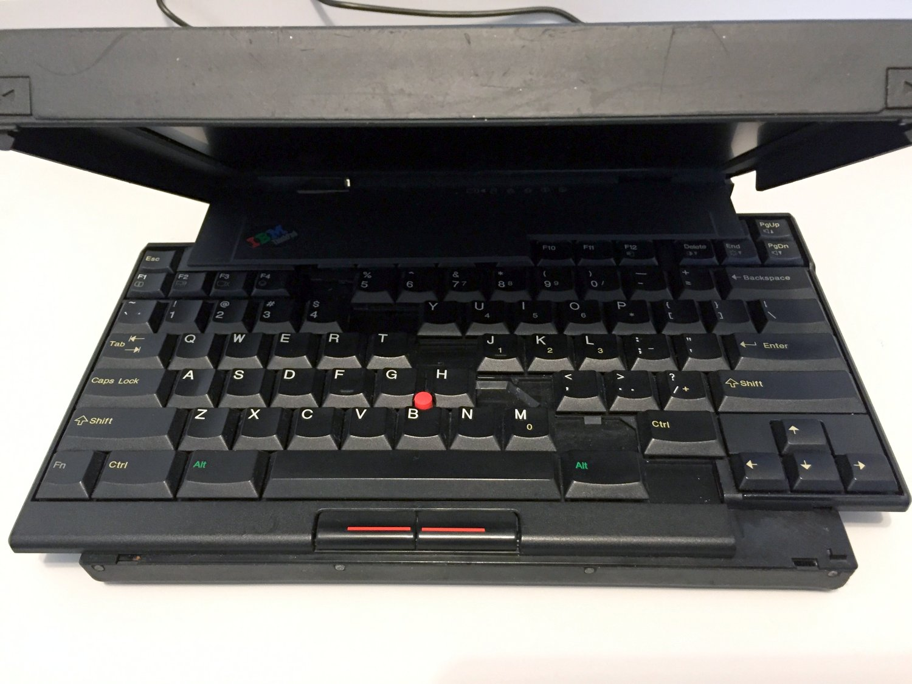
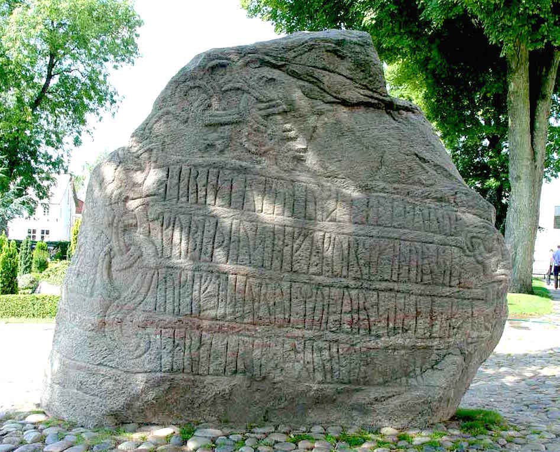
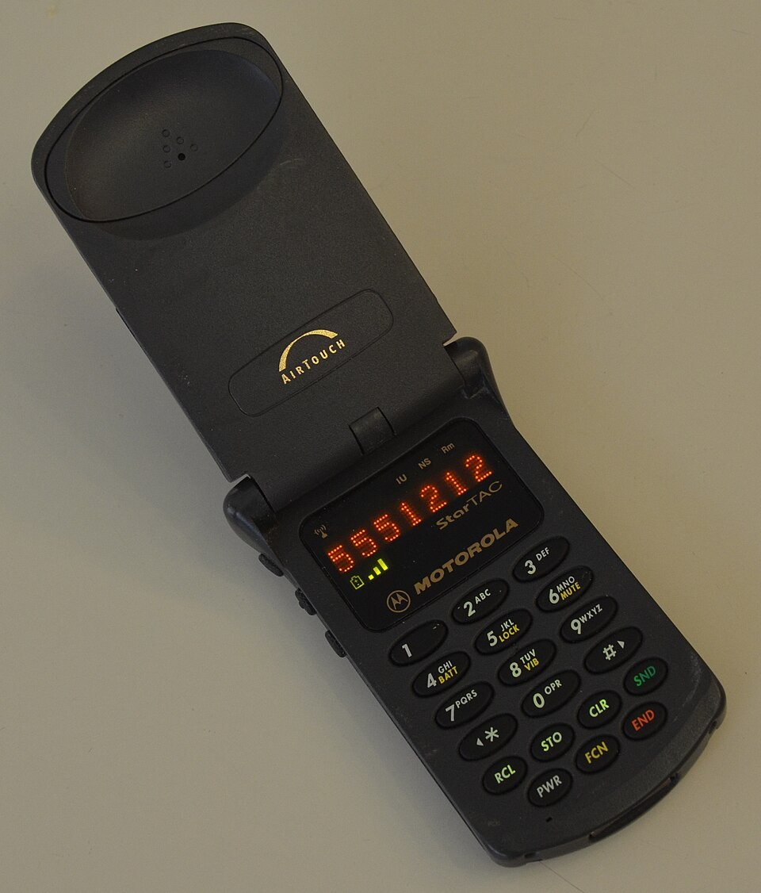
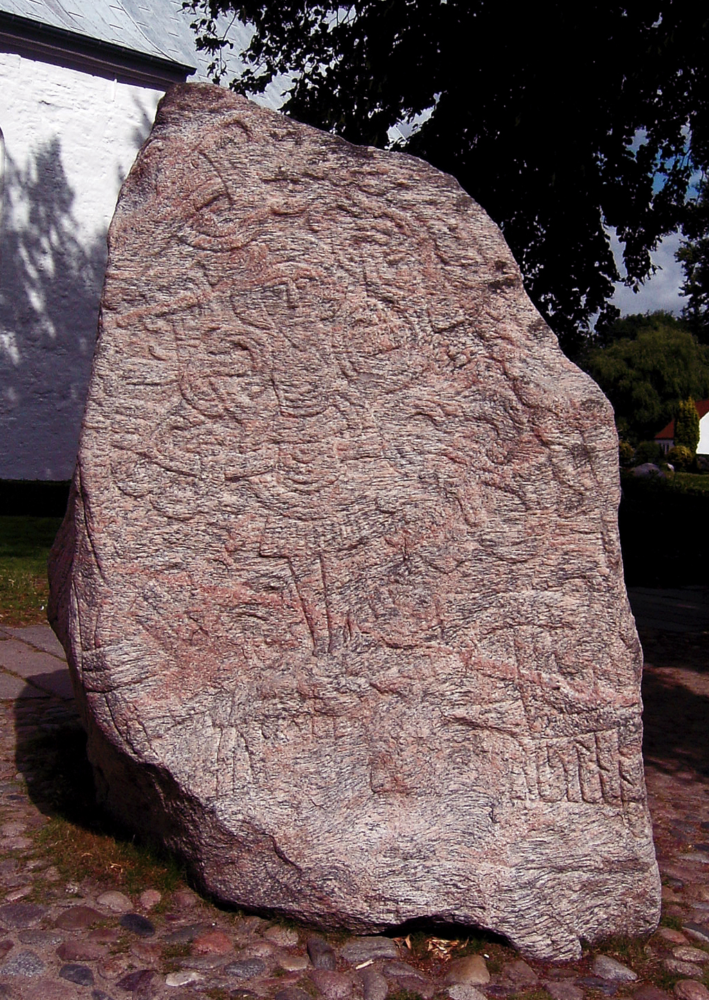

이어폰을 연결하다가 덴마크의 돌까지
이어폰을 연결할 때 보는 블루투스 표시에는 세로선이 하나 있고, 오른쪽에는 뾰족한 고리 두 개가 달려 있습니다. 이 기호의 이야기는 덴마크 옐링이라는 마을에 서 있는 커다란 돌에서 시작해요.
10세기 덴마크 왕 하랄드는 아버지 고름과 어머니 튀라를 기리기 위해 이 돌을 세웠습니다. 그러면서 자신이 덴마크와 노르웨이를 차지했고 덴마크인들을 기독교로 이끌었다는 말도 새겼어요. 이 왕의 별명이 블루투스, 글자 그대로 옮기면 ‘푸른 이’였습니다.


돌 속 인물의 한 손에는 휴대폰, 다른 손에는 노트북
천 년쯤 지나 인텔 엔지니어 짐 카닥은 휴대폰과 노트북이 짧은 거리에서 무선으로 통신할 수 있게 하는 일을 하고 있었습니다. 마침 바이킹 역사책을 읽다가 하랄드의 이야기를 접했어요. 서로 다른 기기와 업계를 하나의 무선 규격으로 연결한다는 계획에, 두 나라를 아울렀다고 돌에 새긴 왕의 별명이 어울린다고 생각했습니다.


카닥은 발표 자료에 쓸 그림도 만들었어요. 책에 실린 룬석 사진을 복사한 뒤, 돌에 새겨진 인물의 한 손에는 휴대폰을, 다른 손에는 노트북을 그려 넣었습니다. 왕이 자기 이름을 딴 기술을 직접 시연하는 것처럼요.
여기서 한 가지가 어긋납니다. 카닥은 사진 속 인물을 하랄드라고 생각했지만, 돌에 새겨진 인물은 예수였습니다. 위 사진에서 양팔을 벌린 인물이 카닥의 발표 자료에서는 두 손에 전자기기를 들게 된 거죠.
“일단 블루투스로 부르죠”
처음에 블루투스는 개발팀이 쓰는 임시 이름이었습니다. 정식 이름 후보로는 개인용 통신망을 뜻하는 PAN과 RadioWire가 있었어요. 카닥의 회고에 따르면 후보 투표에서는 PAN이 앞섰습니다. 그런데 상표를 조사하니 이미 비슷한 이름이 너무 많이 나왔고, RadioWire도 발표 전에 확인을 마치기 어려웠습니다.
- PAN
- 비슷한 이름이 많았어요
- RadioWire
- 상표 확인 시간이 모자랐어요
- Bluetooth
- 발표에 쓰인 이름
발표를 앞둔 팀의 결정을 오늘날 말투로 풀면 이렇습니다.
“일단 블루투스로 발표합시다. 정식 이름은 나중에 정하고요.”
임시 이름은 발표를 타고 업계에 퍼졌고, 결국 정식 이름으로 남았습니다.
두 글자가 세로획 하나를 나눠 씁니다
로고를 만들 때는 하랄드의 H에 해당하는 룬 ᚼ와 블루투스의 B에 해당하는 룬 ᛒ를 겹쳤습니다. 고대 스칸디나비아에서 쓰던 문자 두 개를 세로획 하나에 포개 놓은 거예요.
휴대폰에서 아이콘을 다시 보면, 오른쪽의 뾰족한 고리 두 개에 ᛒ의 모양이 남아 있고, 가운데를 가로지르는 사선에는 ᚼ의 흔적이 보입니다. 이어폰을 연결할 때마다 천 년 전 사람의 이니셜을 보고 있었던 셈이죠.
참고 자료와 이미지 출처
본문 자료
이미지 출처
- 17세기 하랄드 판화 · Bildarchiv Austria · 퍼블릭 도메인 표기 · 색상과 표시 영역 조정
- 룬석 비문 사진 · Jürgen Howaldt · CC BY-SA 2.0 DE · 색상과 표시 영역 조정
- 룬석의 예수 조각 사진 · Per Meistrup · CC BY-SA 4.0 · 색상 조정과 윤곽 크롭
- 모토로라 스타택 사진 · Nkp911m500 · CC BY-SA 3.0 · 배경 제거와 밝기 조정
- IBM 씽크패드 701C 사진 · Raymangold22 · CC0